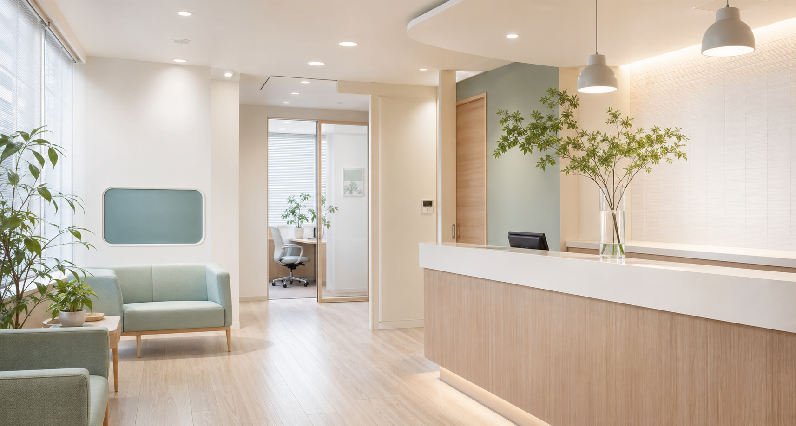

丁寧なヒアリング
症状の経過、生活習慣、不安に感じていることを整理しながら診察します。

お知らせ 2026年春のホームページ初稿です。正式な診療科目・所在地・予約方法は差し替え予定です。
Our Care
症状の経過、生活習慣、不安に感じていることを整理しながら診察します。
検査や治療の選択肢を、納得して判断できる言葉でお伝えします。
予約、受付、会計までの負担を少なくし、継続しやすい体験を整えます。
Medical Menu
正式な診療範囲に合わせて調整できる、仮の構成です。
発熱、咳、腹痛、生活習慣病など、日常的な体調不良の相談に対応します。
健康診断、各種検査、ワクチン接種など、病気の予防と早期発見を支えます。
再診や継続的な相談など、状態に応じてオンラインでの相談導線を用意します。
First Visit
Webまたはお電話でご予約ください。急な症状の方は電話でご相談ください。
保険証、各種医療証、お薬手帳、紹介状があればお持ちください。
現在の症状とお困りごとを確認し、必要に応じて検査や治療方針をご提案します。
Hours
実際の診療時間が決まり次第、曜日ごとの表に反映します。
| 時間 | 月 | 火 | 水 | 木 | 金 | 土 | 日 |
|---|---|---|---|---|---|---|---|
| 9:00-13:00 | ● | ● | ● | 休 | ● | ● | 休 |
| 15:00-18:30 | ● | ● | ● | 休 | ● | 休 | 休 |
休診日: 木曜・日曜・祝日。上記は仮データです。
Reservation
症状やご希望の診療内容を確認し、必要な受診方法をご案内します。
Access
〒000-0000
東京都〇〇区〇〇 0-0-0
最寄駅から徒歩約5分。駐輪場・近隣コインパーキングの案内をここに掲載できます。
FAQ
当日の状況によりご案内できる場合があります。待ち時間を少なくするため、事前予約をおすすめします。
現金、クレジットカード、電子決済など、実際の対応方法に合わせて掲載します。
症状や診療内容により可否が異なります。まずは受付までお問い合わせください。